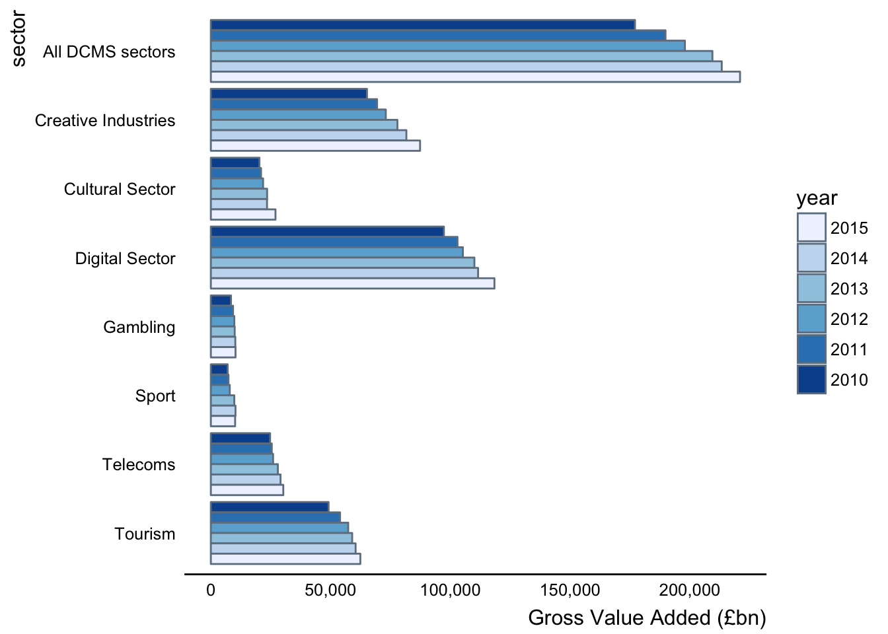

Chapter 4 Exemplar RAP
Chapter 3 considered why RAP is a useful paradigm.
In this Chapter we demonstrate a RAP package developed in collaboration with the Department for Culture Media and Sport (DCMS).
4.1 Package Purpose
In this exemplar project Matt Upson aimed at a high level of automation to demonstrate what is possible, and because DCMS had a skilled data scientist on hand to maintain and develop the project. Nonetheless, in the course of the work, statisticians at DCMS continue to undertake training in R, and the Better Use of Data Team spent time to ensure that the software development practices such as managing software dependencies, version control, package development, unit testing, style guide, open by default and continuous integration are embedded within the team that owns the publication.
We’re continuing to support DCMS in the development of this prototype pipeline, with the expectation that it will be used operationally in 2017. If you want to learn more about this project, the source code for the eesectors R package is maintained on GitHub.com. The README provides instructions on how to test the package using the openly published data from the 2016 publication.
4.2 eesectors Package Exploration
The following is an exploration of the eesectors package to help familiarise users with the key principles so that they can automate report production through package development in R using knitr. This examines the package in more detail compared to the README so that data scientists looking to implement RAP can note some of the characteristics of the code employed.
4.2.1 Installation
The package can then be installed using devtools::install_github('ukgovdatascience/eesectors'). Some users may not be able to use the devtools::install_github() commands as a result of network security settings. If this is the case, eesectors can be installed by downloading the zip of the repository and installing the package locally using devtools::install_local(<path to zip file>).
4.2.1.1 Version control
As the code is stored on Github we can access the current master version as well as all historic versions. This allows me to reproduce a report from last year if required. I can look at what release version was used and install that accordingly using the additional arguments for install_github.
4.2.2 Loading the package
Installation means the package is on our computer but it is not loaded into the computer’s working memory. We also load any additional packages that might be useful for exploring the package or data therein.
# devtools::install_github('ukgovdatascience/eesectors')
library(eesectors)## eesectors: Reproducible Analytical Pipeline (RAP) for the
## Economic Estimates for DCMS Sectors Statistical First Release
## (SFR). For more information visit:
## https://github.com/ukgovdatascience/eesectorsThis makes all the functions within the package available for use. It also provides us with some R data objects, such as aggregated data sets ready for visualisations or analysis within the report.
Packages are the fundamental units of reproducible R code. They include reusable R functions, the documentation that describes how to use them, and sample data. - Hadely Wickham
4.2.3 Explore the package
A good place to start is the package README.
4.2.3.1 Status badges
The status badges provide useful information. They are found in the top left of the README and should be green and say passing. This indicates that this package will run OK on Windows and linux or mac. Essentially the package is likely to build correctly on your machine when you install it. You can carry out these build tests locally using the devtools package.
4.2.3.2 Look at the output first
If you go to Chapter 3 of the DCMS publication it is apparent that most of the content is either data tables of summary statistics or visualisation of the data. This makes automation particularly useful here and likely to make time savings. Chapter 3 seems to be fairly typical in its length (if not a bit shroter compared to other Chapters).
This package seems to work by taking the necessary data inputs as arguments in a function then outputting the relevant figures. The names of the functions match the figures they produce. Prior to this step we have to get the data in the correct format.
If you look at the functions within the package within R Studio using the package navigator it is evident that there are a function of families dedicated to reading Excel spreadsheets and collecting the data in a tidy .Rds format. These are given the funciton name-prefix of extract_ (try to give your functions good names).
The GVA_by_sector_2016 provides test data to work with during development. This will be important for the development of other packages for different reports. You need a precise understanding of how you go from raw data, to aggregated data (such as GVA_by_sector_2016) to the final figure. What are your inputs (arguments) and outputs? In some cases where your master data is stored in a particularly difficult for a machine to read you may prefer having a human to this extraction step.
dplyr::glimpse(GVA_by_sector_2016)## Observations: 54
## Variables: 3
## $ sector <fctr> creative, culture, digital, gambling, sport, telecoms,...
## $ year <int> 2010, 2010, 2010, 2010, 2010, 2010, 2010, 2011, 2011, 2...
## $ GVA <dbl> 65188, 20291, 97303, 8407, 7016, 24738, 49150, 69398, 2...x <- GVA_by_sector_20164.2.3.3 Automating QA
Human’s are not particularly good at Quality Assurance (QA), especially when working with massive spreadsheets it’s easy for errors to creep in. We can automate alot of the sense checking and update this if things change or a human provides another creative test to use for sense checking. If you can describe the test to a colleague then you can code it.
The author uses messages to tell us what checks are being conducted or we can look at the body of the function if we are interested. This is useful if you are considering developing your own package, it will help you struture the message which are useful for the user.
gva <- year_sector_data(GVA_by_sector_2016)## Initiating year_sector_data class.
##
##
## Expects a data.frame with three columns: sector, year, and measure, where
## measure is one of GVA, exports, or enterprises. The data.frame should include
## historical data, which is used for checks on the quality of this year's data,
## and for producing tables and plots. More information on the format expected by
## this class is given by ?year_sector_data().##
## *** Running integrity checks on input dataframe (x):##
## Checking input is properly formatted...## Checking x is a data.frame...## Checking x has correct columns...## Checking x contains a year column...## Checking x contains a sector column...## Checking x does not contain missing values...## Checking for the correct number of rows...## ...passed##
## ***Running statistical checks on input dataframe (x)...
##
## These tests are implemented using the package assertr see:
## https://cran.r-project.org/web/packages/assertr for more details.## Checking years in a sensible range (2000:2020)...## Checking sectors are correct...## Checking for outliers (x_i > median(x) + 3 * mad(x)) in each sector timeseries...## Checking sector timeseries: all_dcms## Checking sector timeseries: creative## Checking sector timeseries: culture## Checking sector timeseries: digital## Checking sector timeseries: gambling## Checking sector timeseries: sport## Checking sector timeseries: telecoms## Checking sector timeseries: tourism## Checking sector timeseries: UK## ...passed## Checking for outliers on a row by row basis using mahalanobis distance...## Checking sector timeseries: all_dcms## Checking sector timeseries: creative## Checking sector timeseries: culture## Checking sector timeseries: digital## Checking sector timeseries: gambling## Checking sector timeseries: sport## Checking sector timeseries: telecoms## Checking sector timeseries: tourism## Checking sector timeseries: UK## ...passedThis is a semi-automated process so the user should check the Checks and ensure they meet their usual checks that would be conducted manually. If a new check or test becomes necessary then it should be implemented by changing the code.
body(year_sector_data)## {
## message("Initiating year_sector_data class.\n\n\nExpects a data.frame with three columns: sector, year, and measure, where\nmeasure is one of GVA, exports, or enterprises. The data.frame should include\nhistorical data, which is used for checks on the quality of this year's data,\nand for producing tables and plots. More information on the format expected by\nthis class is given by ?year_sector_data().")
## message("\n*** Running integrity checks on input dataframe (x):")
## message("\nChecking input is properly formatted...")
## message("Checking x is a data.frame...")
## if (!is.data.frame(x))
## stop("x must be a data.frame")
## message("Checking x has correct columns...")
## if (length(colnames(x)) != 3)
## stop("x must have three columns: sector, year, and one of GVA, export, or x")
## message("Checking x contains a year column...")
## if (!"year" %in% colnames(x))
## stop("x must contain year column")
## message("Checking x contains a sector column...")
## if (!"sector" %in% colnames(x))
## stop("x must contain sector column")
## message("Checking x does not contain missing values...")
## if (anyNA(x))
## stop("x cannot contain any missing values")
## message("Checking for the correct number of rows...")
## if (nrow(x) != length(unique(x$sector)) * length(unique(x$year))) {
## warning("x does not appear to be well formed. nrow(x) should equal\nlength(unique(x$sector)) * length(unique(x$year)). Check the of x.")
## }
## message("...passed")
## message("\n***Running statistical checks on input dataframe (x)...\n\n These tests are implemented using the package assertr see:\n https://cran.r-project.org/web/packages/assertr for more details.")
## value <- colnames(x)[(!colnames(x) %in% c("sector", "year"))]
## message("Checking years in a sensible range (2000:2020)...")
## assertr::assert_(x, assertr::in_set(2000:2020), ~year)
## message("Checking sectors are correct...")
## sectors_set <- c(creative = "Creative Industries", culture = "Cultural Sector",
## digital = "Digital Sector", gambling = "Gambling", sport = "Sport",
## telecoms = "Telecoms", tourism = "Tourism", all_dcms = "All DCMS sectors",
## perc_of_UK = "% of UK GVA", UK = "UK")
## assertr::assert_(x, assertr::in_set(names(sectors_set)),
## ~sector, error_fun = raise_issue)
## message("Checking for outliers (x_i > median(x) + 3 * mad(x)) in each sector timeseries...")
## series_split <- split(x, x$sector)
## lapply(X = series_split, FUN = function(x) {
## message("Checking sector timeseries: ", unique(x[["sector"]]))
## assertr::insist_(x, assertr::within_n_mads(3), lazyeval::interp(~value,
## value = as.name(value)), error_fun = raise_issue)
## })
## message("...passed")
## message("Checking for outliers on a row by row basis using mahalanobis distance...")
## lapply(X = series_split, FUN = maha_check)
## message("...passed")
## structure(list(df = x, colnames = colnames(x), type = colnames(x)[!colnames(x) %in%
## c("year", "sector")], sector_levels = levels(x$sector),
## sectors_set = sectors_set, years = unique(x$year)), class = "year_sector_data")
## }The function is structured to tell the user what check is being made and then running that check given the input x. If the input fails a check the function is stopped with a useful diagnostic message for the user. This is achieved using if and the opposite of the desired feature of x.
message("Checking x has correct columns...")
if (length(colnames(x)) != 3)
stop("x must have three columns: sector, year, and one of GVA, export, or x")For example, if x does not have exactly three columns we stop.
4.2.3.4 Output of this function
The output object is different to the input as expected, yet it does contain the initial data.
identical(gva$df, x)## [1] TRUEThe rest of the list contains other details that could be changed at a later date if required, demonstrating defensive programming. For example, the sectors that are of interest to DCMS have changed and may change again.
?year_sector_dataLet’s take a closer look at this function using the help and other standard function exploration functions.
The help says it produces a custom class of object with five slots.
isS4(gva)## [1] FALSEclass(gva)## [1] "year_sector_data"It’s not actually an S4 object, by slots the author means a list of objects. This approach is sensible and easy to work with, as most users are familiar with S3.
4.2.3.5 The input
The input, which is likely a bunch of not tidy or messy spreadsheets needs to be wrangled and aggregated (if necessary) for input into the functions prefixed by figure.
dplyr::glimpse(GVA_by_sector_2016)## Observations: 54
## Variables: 3
## $ sector <fctr> creative, culture, digital, gambling, sport, telecoms,...
## $ year <int> 2010, 2010, 2010, 2010, 2010, 2010, 2010, 2011, 2011, 2...
## $ GVA <dbl> 65188, 20291, 97303, 8407, 7016, 24738, 49150, 69398, 2...4.2.3.6 The R output
With the data in the appropriate form to be received as an argument or input for the figure family of functions we can proceed to plot.
figure3.1(x = gva)
Again we can look at the details of the plot. We could change the body of the function to affect change to the default plot or we can pass additional ggplot arguments to it.
Reading the code we see it filters the data, makes the variables it needs, refactors the sector variable and then plots it.
body(figure3.1)## {
## out <- tryCatch(expr = {
## sectors_set <- x$sectors_set
## x <- dplyr::filter_(x$df, ~sector != "UK")
## x <- dplyr::mutate_(x, year = ~factor(year, levels = c(2016:2010)))
## x$sector <- factor(x = unname(sectors_set[as.character(x$sector)]),
## levels = rev(as.character(unname(sectors_set[levels(x$sector)]))))
## p <- ggplot2::ggplot(x) + ggplot2::aes_(y = ~GVA, x = ~sector,
## fill = ~year) + ggplot2::geom_bar(colour = "slategray",
## position = "dodge", stat = "identity") + ggplot2::coord_flip() +
## govstyle::theme_gov(base_colour = "black") + ggplot2::scale_fill_brewer(palette = "Blues") +
## ggplot2::ylab("Gross Value Added (£bn)") + ggplot2::theme(legend.position = "right",
## legend.key = ggplot2::element_blank()) + ggplot2::scale_y_continuous(labels = scales::comma)
## return(p)
## }, warning = function() {
## w <- warnings()
## warning("Warning produced running figure3.1():", w)
## }, error = function(e) {
## stop("Error produced running figure3.1():", e)
## }, finally = {
## })
## }We can inspect and change an argument if we feel inclined or if a new colour scheme becomes preferred for example. However, there is no ... in the body of the function itself so where does this argument get passed to?
This all looks straight forward and we can inspect the other functions for generating the figures or plot output.
body(figure3.2)## {
## out <- tryCatch(expr = {
## sectors_set <- x$sectors_set
## x <- dplyr::filter_(x$df, ~sector %in% c("UK", "all_dcms"))
## x$sector <- factor(x = unname(sectors_set[as.character(x$sector)]))
## x <- dplyr::group_by_(x, ~sector)
## x <- dplyr::mutate_(x, index = ~max(ifelse(year == 2010,
## GVA, 0)), indexGVA = ~GVA/index * 100)
## p <- ggplot2::ggplot(x) + ggplot2::aes_(y = ~indexGVA,
## x = ~year, colour = ~sector, linetype = ~sector) +
## ggplot2::geom_path(size = 1.5) + govstyle::theme_gov(base_colour = "black") +
## ggplot2::scale_colour_manual(values = unname(govstyle::gov_cols[c("red",
## "purple")])) + ggplot2::ylab("GVA Index: 2010=100") +
## ggplot2::theme(legend.position = "bottom", legend.key = ggplot2::element_blank()) +
## ggplot2::ylim(c(80, 130))
## return(p)
## }, warning = function() {
## w <- warnings()
## warning("Warning produced running figure3.2():", w)
## }, error = function(e) {
## stop("Error produced running figure3.2():", e)
## }, finally = {
## })
## }body(figure3.3)## {
## out <- tryCatch(expr = {
## sectors_set <- x$sectors_set
## x <- dplyr::filter_(x$df, ~!sector %in% c("UK", "all_dcms"))
## x$sector <- factor(x = unname(sectors_set[as.character(x$sector)]))
## x <- dplyr::group_by_(x, ~sector)
## x <- dplyr::mutate_(x, index = ~max(ifelse(year == 2010,
## GVA, 0)), indexGVA = ~GVA/index * 100)
## p <- ggplot2::ggplot(x) + ggplot2::aes_(y = ~indexGVA,
## x = ~year, colour = ~sector, linetype = ~sector) +
## ggplot2::geom_path(size = 1.5) + govstyle::theme_gov(base_colour = "black") +
## ggplot2::scale_colour_brewer(palette = "Set1") +
## ggplot2::ylab("GVA Index: 2010=100") + ggplot2::theme(legend.position = "right",
## legend.key = ggplot2::element_blank()) + ggplot2::ylim(c(80,
## 150))
## return(p)
## }, warning = function() {
## w <- warnings()
## warning("Warning produced running figure3.2():", w)
## }, error = function(e) {
## stop("Error produced running figure3.2():", e)
## }, finally = {
## })
## }4.2.3.7 Error handling
A point of interest in the code with which some users may be unfamiliar is tryCatch which is a function that allows the function to catch conditions such as warnings, errors and messages. We see this towards the end of the function where if either of these conditions are produced then an informative message is produced (in that it tells you in what function there was a problem). The structure here is simple and could be copied and pasted for use in automating other figures of other chapters or statistical reports.
For a comprehensive introduction see Hadley’s Chapter.
4.3 Chapter plenary
We have explored the eesectors package from the perspective of someone wishing to develop our own semi-automated chapter production through the development of a package in R. This package provides a useful tempplate where one could copy the foundations of the package and workflow.